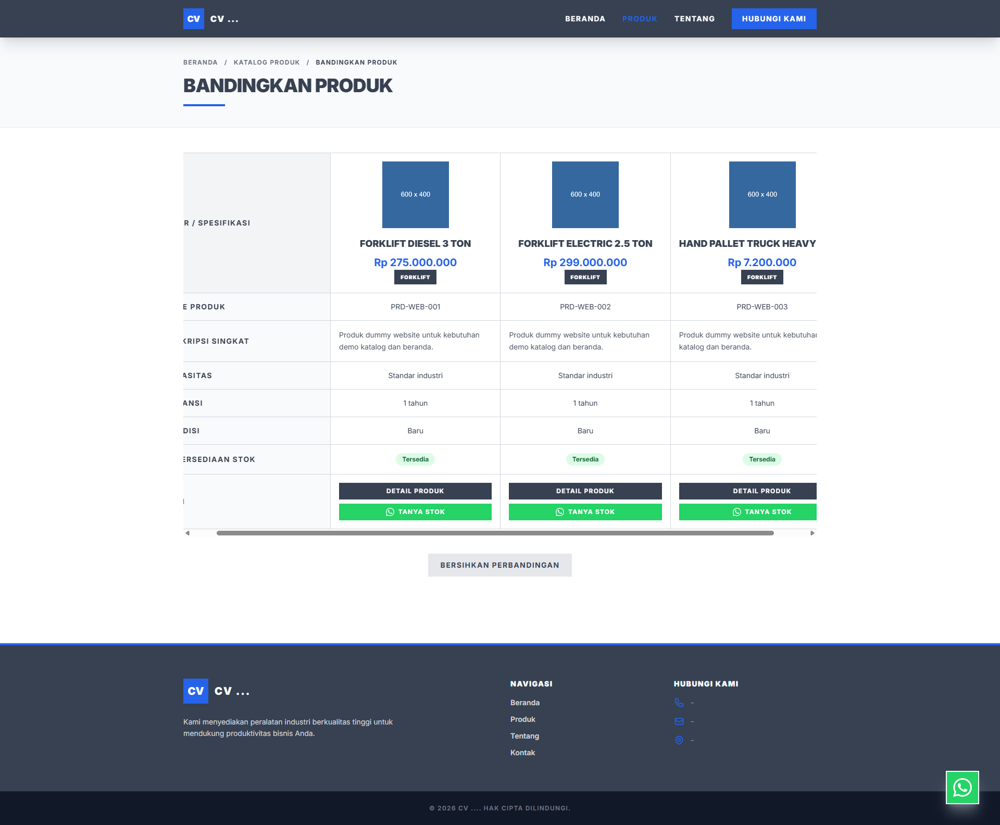

🚀 Solusi End-to-End untuk Bisnis
Manajemen CV Terintegrasi Penuh
Dari etalase website publik yang memukau hingga dashboard operasional (POS, Gudang, Keuangan) yang powerful. Semua dalam satu ekosistem.

Dari etalase website publik yang memukau hingga dashboard operasional (POS, Gudang, Keuangan) yang powerful. Semua dalam satu ekosistem.
Arsitektur komprehensif yang menjembatani pemasaran digital dengan efisiensi operasional.
Klik gambar untuk memperbesar resolusi layar.





Sistem ini dipersenjatai dengan Framework berkinerja tinggi untuk stabilitas pemrosesan data.
Lihat bagaimana sistem ini bekerja secara langsung.
Video demonstrasi belum tersedia. Sisipkan embed YouTube di source code.
Pelajari secara komprehensif bagaimana proses bisnis pada CV Anda diotomatisasi melalui sistem ini, dari awal transaksi hingga pelaporan akhir.
Memuat panduan...
Transparan, tanpa biaya tersembunyi. Miliki kendali penuh operasional bisnis Anda.
Instalasi di server, konfigurasi awal, dan testing.
Penambahan modul/fitur baru sesuai request bisnis Anda.
Lisensi Sekali Bayar (Source Code)